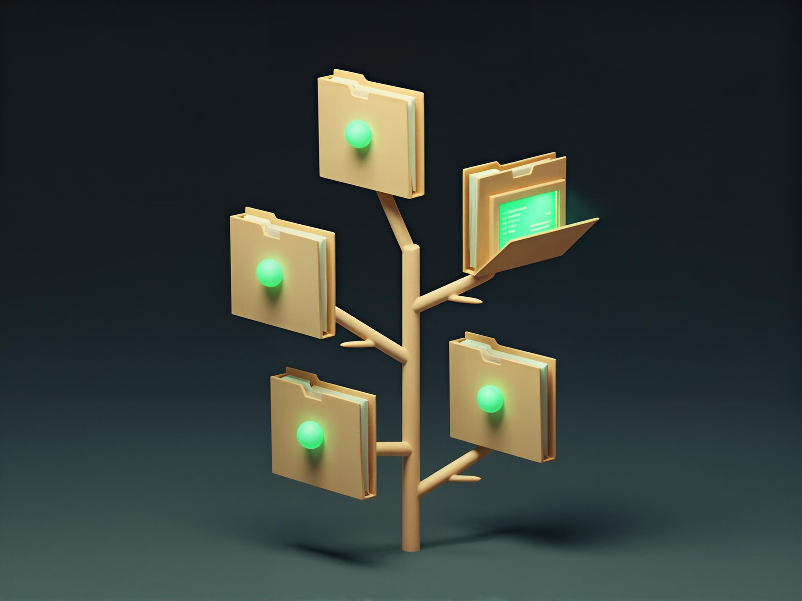

Repo Peeker (`gitpeek`)

A standalone TempestPHP console application that walks a folder of projects
to a tree-style depth limit and shows which directories are git
repositories, along with their branch, dirty/clean state, and ahead/behind
counts.
gitpeek status ~/Code -L 2
gitpeek legend
Build
Requires PHP ^8.4 and Composer.
composer install
vendor/bin/box compile
This produces gitpeek.phar in the project root — a single file bundling
the application and its production dependencies.
box compileis provided byhumbug/box, installed viabamarni/composer-bin-pluginintovendor-bin/boxso its own build-time dependencies never pollute this project's dependency graph. A plaincomposer installat the project root installs it automatically — use a normalcomposer installhere rather than--no-dev, sincebamarni/composer-bin-plugin(and thereforeboxitself) is a dev dependency;box compilehandles excluding dev-only files from the resulting phar on its own.
Install
Make the phar executable, drop the .phar extension, and move it onto your
$PATH:
chmod +x gitpeek.phar
mv gitpeek.phar ~/bin/gitpeek
gitpeek now runs standalone from any directory on any machine with a PHP
CLI binary — no composer install or project checkout required.
gitpeek status ~/Code -L 2
gitpeek legend
Usage
gitpeek status [path] [-L n]— colored, tree-style listing ofpath(default.), capped atnlevels deep (default2).gitpeek status [path] --nested— also descend into detected repos to surface nested repos (submodules, vendored checkouts, etc.).gitpeek status [path] --full— show the full, uncollapsed filesystem tree instead of the default path-collapsed compact view.gitpeek legend— print the key explaining every symbol/colorstatususes.gitpeek statuswith no arguments at all is equivalent togitpeek status ..
Development
composer install
vendor/bin/phpunit
vendor/bin/phpunit includes a smoke test (tests/PharSmokeTest.php) that
builds gitpeek.phar and runs it as a real subprocess to verify the
packaged artifact works end to end.